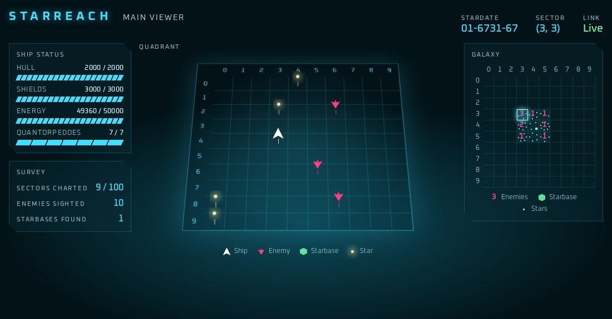

Your mission
Welcome aboard, Captain. The galaxy is crawling with enemy raiders, and Fleet would like it less crawly. You give the orders. Your ship's computer, an AI assistant, flies the ship and tells you what it sees. Clear every enemy from the galaxy and Fleet will be very pleased with you.

Not sure what to do? Ask the ship's computer.
Ask it What can you do?
It knows every command, and will happily explain.
Connect your computer
Starreach runs as an MCP server. Add it to your AI assistant:
https://starreach.yuwakisa.com/mcp
- Claude Code:
claude mcp add --transport http starreach https://starreach.yuwakisa.com/mcp - claude.ai or Claude Desktop: add a custom connector with the URL above. It needs no sign-in. Free plans allow one custom connector.
- Any other MCP client that speaks streamable HTTP works too.
Then tell the computer to start a game. It will give you a viewer link. Open it for a live, read-only view of your ship, the sector and the galaxy while you play.
Field guide
- Coordinates are (y, x): row first, then column.
- Scan with the long-range scan, then warp to a sector.
- Blaston beams are best up close. Quantorpedoes are limited, but never miss with a clear shot.
- Dock at a starbase, once its sector is clear, to repair and resupply.
- Enemies fire back, and they close in. Mind your shields.
- Give plain orders: your ship's computer will understand.